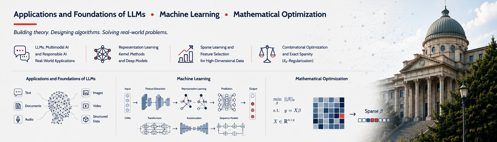

Ahmad Mousavi
I am an Assistant Professor of Data Science in the Department of Mathematics and Statistics at American University, where my recent research focuses on large language models, multimodal learning, and NLP applications in social media analysis and healthcare. I also have a strong background in sparse optimization and machine learning, including kernel-free quadratic classifiers and penalty decomposition algorithms, as well as in mathematical finance and decentralized bilevel programming.
A unifying theme of my research is the development of scalable, interpretable, and robust algorithms that bridge theoretical optimization with real-world data science challenges. My publications span both methodological contributions and domain-specific applications, reflecting a commitment to advancing data science across theory, practice, and interdisciplinary collaboration. The Research page walks through representative papers in each area, with figures from the papers and short explanations written for students.
I welcome inquiries from students who demonstrate persistence, a strong motivation to learn, and a foundation in relevant areas such as programming, machine learning, optimization, or natural language processing. Students interested in engaging in research collaboration are encouraged to reach out via email. Please include your CV and any additional information that helps me understand your preparation and interests (for example coursework, projects, or links to code). Geographic location is not a limitation; remote collaboration is fully supported.
